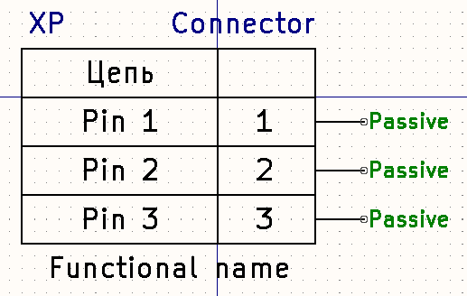

Connector symbol generator
Place in left textarea list of pin in format "pin_number pin_name [additional info]" and click on Generate button, take from right textarea text and past it into necesary *.kicad_sym file.
Place empty stroke in pin list to delimeter pin by group. Each group generate separete unit in symbol.
